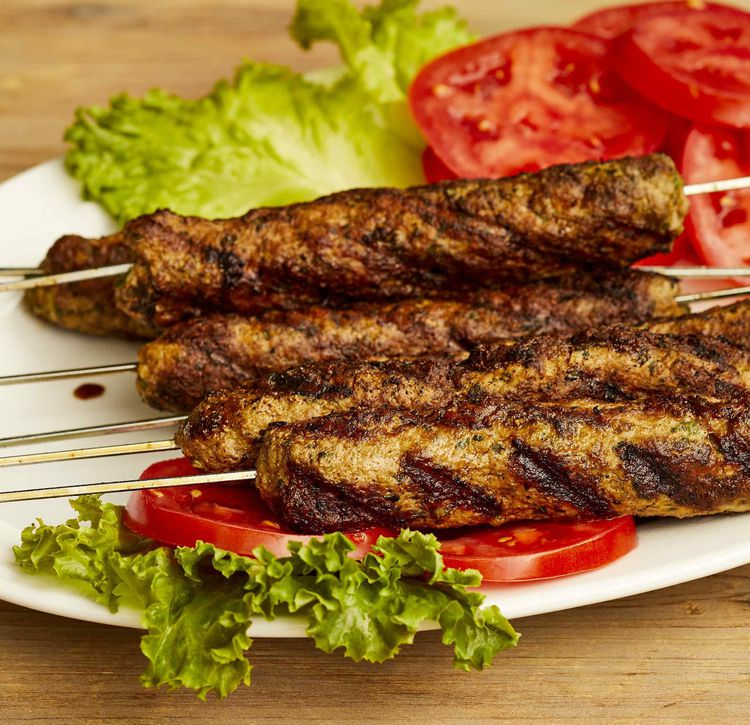

Seekh Kebab

Description
These lamb seekh kebabs are a spicy and extremely flavorful recipe that will surely be a hit at any outdoor party.
Ingredients
- 2 pounds lean ground lamb
- 2 medium onions, finely chopped
- 1/2 cup fresh mint leaves, finely chopped
- 1/2 cup cilantro, finely chopped
- 1 tablespoon ginger paste
- 1 tablespoon green chile paste
- 2 teaspoons ground cumin
- 2 teaspoons ground coriander
- 2 teaspoons paprika
- 2 teaspoons salt
- 1 teaspoon cayenne pepper
- 8 skewers
- 1/4 cup vegetable oil for brushing, or as needed
Steps
- Mix ground lamb, onions, mint, cilantro, ginger paste, and chile paste together in a large bowl. Season with cumin, coriander, paprika, salt, and cayenne. Cover and chill in the refrigerator for 2 hours. Soak skewers in cold water.
- Divide lamb mixture into 8 equal portions; mold portions onto skewers to form a sausage shape. Refrigerate skewers until you are ready to grill.
- Preheat an outdoor grill for high heat and brush the grate liberally with oil.
- Cook skewers on the preheated grill, turning frequently, until nicely browned on all sides and meat is no longer pink in the center, about 10 minutes. An instant-read thermometer inserted into the center should read at least 160 degrees F (71 degrees C).
Home